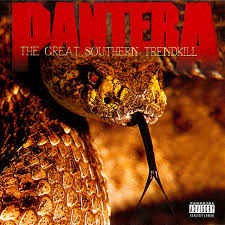

Discografía
Estos son algunos de los álbumes más representativos de esta banda, con enlace directo a YouTube para escuchar el disco completo.
Álbumes Destacados

VULGAR DISPLAY OF POWER (1992)
Un album celebrado por la critica y por el publico, un clasico para los amantes del genero. Contiene himnos como WALK y This love.
Escuchar en YouTubeCOWBOYS FROM HELL (1990)
El primer gran exito de Pantera con canciones iconicas como "Cementery Gates" y "Cowboys from Hell".
Escuchar en YouTube

The Great Southern Trendkill (1996)
Un album salvaje en toda la palabra, el favortio de muchos y con canciones tan iconicas como "10's" y "Floods".
Escuchar en YouTube